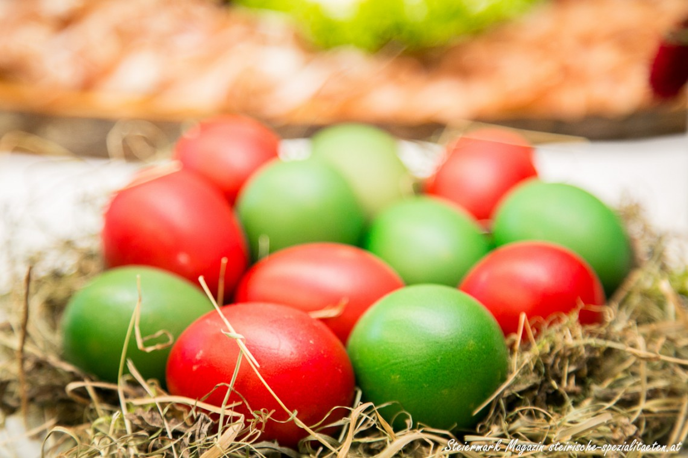
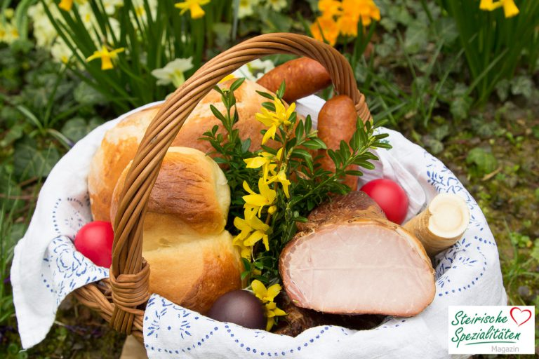

Osterbrauchtum: Wissenswertes über Ostern

Der Osterbrauchtum spielt in Österreich traditionell eine große Rolle. Was feiert man zu Ostern?
Wann ist der Ostersonntag? Wo wohnt der Osterhase? Wir haben uns typische Bräuche zu Ostern angesehen und für unsere Leser zusammen gefasst.
Woher kommt das Wort Ostern?
Ostern hat seine Wurzeln im heidnischen Frühlingsfest. Man feierte das zunehmende Licht im Frühling,
die wiederkehrende Fruchtbarkeit, das Erwachen der Natur und den Neubeginn. Rund um diese Symbolik sammelten sich Rituale,
die bis ins heutige Zeitalter weiter getragen wurden. Im Zusammenhang mit Ostern ist des öfteren auch von Ostara die Rede,
einer germanischen Frühlingsgöttin, die im Frühjahr verehrt wurde.
Über die genaue Herkunft des Wortes Ostern ist man sich jedoch unklar.
Die Himmelsrichtung Osten (der Aufgang der Sonne) oder das altgermanische Wort Austro für Morgenröte aber auch die Göttin Ostara könnten hier zur Bezeichnung Ostern beigetragen haben.
Ostern ist an keinem fixen Datum wie etwa Weihnachten. An welchem Wochenende Ostern gefeiert wird, bestimmt der Mond.
Das Osterwochenende ist immer jenes Wochenende nach dem ersten Frühlingsvollmond.
Der Ostersonntag fällt also frühestens auf den 22. März und spätestens auf den 25. April.
Osterhase & Ostereier
Das Ei gilt seit Jahrtausenden als Sinnbild neuen Lebens und als Symbol der Fruchtbarkeit.
Auch der Hase steht für Fruchtbarkeit, bekannt auch als Begleiter der Fruchtbarkeitsgöttin Ostara.
Nach der eierlosen Winterzeit fangen die Vögel und Hühner wieder an, Eier zu legen – ein weiteres Zeichen,
das der Frühling einzieht. Daraus entstand angeblich auch der Brauch des Eiersuchen. Da die Hühner damals frei herumliefen,
legten sie natürlich auch ihre Eier irgendwo ab. Damit die Menschen die Eier nutzen konnten, mussten sie somit danach suchen.
Eine andere Annahme besagt, dass das Verschenken von Eiern eine heidnische Tradition zu Ostara war und von der Kirche
unter Strafe gestellt wurde. Um nicht erwischt zu werden, wurden die Eier nicht mehr persönlich übergeben,
sondern auf Feldern versteckt. Familie und Freunde mussten die Eier suchen gehen. So gesehen das,
was wir heute auch noch zu Ostern machen.
Wie man darauf kam, dass der Osterhase die Ostereier bringt, ist unbekannt.
Zuvor waren es auch andere Tiere wie Fuchs oder Storch.
Vermutlich lässt sich der Zusammenhang in der Symbolik der Fruchtbarkeit sehen,
mit dem sowohl der Hase als auch das Ei in Verbindung steht.
Osterbräuche: Eierfärben und Osterfeuer
Das Verschenken von Ostereiern ist ein weit verbreiteter Brauch.
Die Tradition vom Eierfärben geht bis ins Mittelalter zurück.
Gefärbt wurden die Eier bis ins 20. Jahrhundert hinein überwiegend nur in der Farbe Rot – die Farbe des Lebens
und der Fruchtbarkeit. Eine pragmatische Theorie des Färbens von Eiern beruht darauf,
dass während der Fastenzeit keine Eier gegessen werden durften. Um sie haltbar zu machen,
wurden die Eier hart gekocht. Um diese später von den rohen Eiern unterscheiden zu können,
wurden sie mit Pflanzenteilen eingefärbt.
Ein weiterer Brauch sind auch die Osterfeuer – Frühlingsfeuer, sie dienten zum endgültigen Austreiben des Winters,
zum Begrüßen des Frühlings und der Sonne. Zugleich hoffte man mit dem Feuer auf gute Ernten.
Im Christentum soll es an die Auferstehung Christi erinnern.
Entzunden werden die Osterfeuer in den Abend- und Nachtstunden am Karsamstag.
Dabei versammeln sich Nachbarn und Freunde um das meist meterhohe Holzfeuer, blicken in die Flammen und wärmen sich daran.
Fastenzeit und Auferstehung
Zur Zeit der Christianisierung baute das Christentum auf diese Tradition auf und übernahm das Osterfest
in Form der Auferstehung Jesus Christus, die mit einer 40 tägigen Fastenzeit vorhergeht.
- Mit Aschermittwoch (dem Tag nach Faschingdienstag) beginnt die Fastenzeit bis eine Woche vor Ostern, der sogenannten Karwoche, die mit dem Palmsonntag eingeleitet wird. Das Wort „Kar“ stammt vom althochdeutschen Begriff „kara“ ab und bedeutet „klagen, trauern“. Am Palmsonntag wird mit sogenannten „Palmbuschen“ dem Einzug Jesu in Jerusalem gehuldigt.
- Am Gründonnerstag feierte Jesus das letzte Abendmahl mit seinen Jüngern. Auch wenn allzugerne „grünes Essen“ wie Cremespinat mit Erdäpfel und Spiegelei – die mittlerweile traditionelle Speise am Gründonnerstag in vielen steirischen Haushalten gekocht wird, hat dieser Tag mit der Farbe grün wenig gemein. Die Bezeichnung geht vielmehr auf den althochdeutschen Begriff „grunen“ zurück der „klagen, weinen“ bedeutet.
- Am Karfreitag wird dem Tod Jesus am Kreuz gedacht und als strenger Fasttag auf Fleisch verzichtet. Der Karsamstag gilt als die Grabesruhe. Am Ostersonntag wird die Auferstehung Jesus von den Toten gefeiert.

- Osterkorb mit Osterbrot, Fleisch und EierAm Ostersonntag bzw. Karsamstag findet die sogenannte Fleischweihe statt. Dabei werden Körbe voll mit Zutaten der Osterjause – Schinken, Kren, Brot, Eier – in die Kirche zur Segnung gebracht. Die Weihung und der anschließende Verzehr beendet die Fastenzeit. Mit den geweihten Speisen soll man angeblich ein Stück „Seligkeit“ zu sich nehmen.